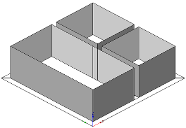
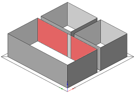
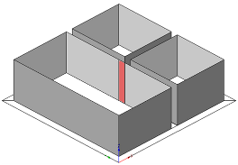
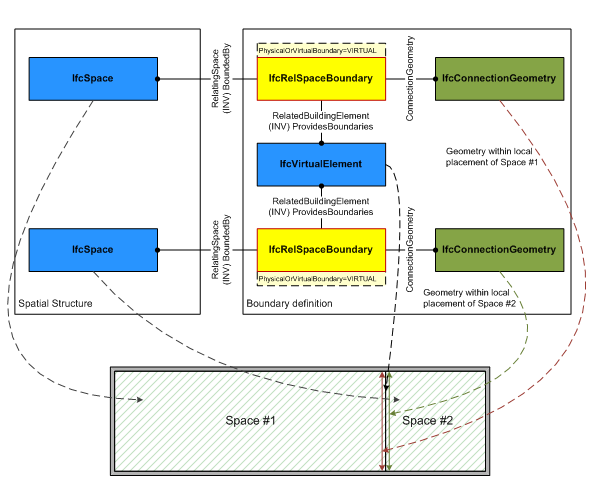

EXPRESS-G diagram
EXPRESS-G diagram| Limite d'espace | |
| Raumgrenzen - Relation |
The space boundary defines the physical or virtual delimiter of a space by the relationship IfcRelSpaceBoundary to the surrounding elements.
The IfcRelSpaceBoundary is defined as an objectified relationship that handles the element to space relationship by objectifying the relationship between an element and the space it bounds. It is given as a one-to-one relationship, but allows each element (including virutal elements and openings) to define many such relationship and each space to be defined by many such relationships.
Space boundaries are always defined as seen from the space. In general two basic types of space boundaries are distinguished:
The exact definition of how space boundaries are broken down depends on the view definition, more detailed conventions on how space boundaries are decomposed can only be given at the domain or application type level.
- In an architectural or FM related view, a space boundary is defined totally from inside the space. This is a 1st level space boundary.
- In a thermal view, the decomposition of the space boundary depends on the material of the providing building element and the adjacent spaces behind. This is a 2nd level space boundary.
 |
|
Figure 133 — Space boundary at first level |
Figure 134 — Space boundary at second level |
 |
 |
Figure 135 — Space boundary at second level type A |
Figure 136 — Space boundary at second level type B |
HISTORY New entity in IFC1.5, the entity has been modified in IFC2x.
IFC2x CHANGE The data type of the attributeRelatedBuildingElement has been changed from IfcBuildingElement to its supertype IfcElement. The data type of the attribute ConnectionGeometry has been changed from IfcConnectionSurfaceGeometry to its supertype IfcConnectionGeometry.
IFC4 CHANGE The attribute RelatedBuildingElement has been made mandatory. For virtual boundaries the reference to IfcVirtualElement is now mandatory.
Attribute Use Definitions
The differences between the 1st and 2nd level space boundaries is identified by:
Differentiation between physical and virtual space boundary is illustrated in Figure 133 and Figure 42.
As shown in Figure 41, if the IfcRelSpaceBoundary is used to express a virtual boundary, the attribute PhysicalOrVirtualBoundary has to be set to VIRTUAL. The attribute RelatedBuildingElement shall point to an instance of IfcVirtualElement. If the correct location is of interest, the attribute ConnectionGeometry is required.
NOTE The connection geometry, either by a 2D curve or a 3D surface, is used to describe the portion of the "virtual wall" that separates the two spaces. All instances of IfcRelSpaceBoundary given at the adjacent spaces share the same instance of IfcVirtualElement. Each instance of IfcRelSpaceBoundary provides in addition the ConnectionGeometry given within the local placement of each space.
 |
Figure 137 — Space boundary of virtual element |
As shown in Figure 42, if the IfcRelSpaceBoundary is used to express a physical boundary between two spaces, the attribute PhysicalOrVirtualBoundary has to be set to PHYSICAL. The attribute RelatedBuildingElement has to be given and points to the element providing the space boundary. The attribute ConnectionGeometry may be inserted, in this case it describes the physical space boundary geometically, or it may be omited, in that case it describes a physical space boundary logically.
Figure 138 — Space boundary of physical element |
Geometry Use Definitions
The IfcRelSpaceBoundary may have geometry attached. If geometry is not attached, the relationship between space and building element is handled only on a logical level. If geometry is attached, it is given within the local coordinate systems of the space.
NOTE The attributes CurveOnRelatingElement at IfcConnectionCurveGeometry or SurfaceOnRelatingElement at IfcConnectionSurfaceGeometry provide the geometry within the local coordinate system of the IfcSpace, whereas the attributes CurveOnRelatedElement at IfcConnectionCurveGeometry or SurfaceOnRelatedElement at IfcConnectionSurfaceGeometry provide the geometry within the local coordinate system of the subtype of IfcElement
NOTE In most view definitions the connection geometry for the related IfcElement is not provided.
The geometric representation (through the ConnectionGeometry attribute) is defined using either 2D curve geometry or 3D surface geometry for space boundaries. In most view definitions the 3D connection surface geometry is required.
Surface connection geometry
The following constraints apply to the surface connection geometry representation:
Curve connection geometry
The following constraints apply to the 2D curve representation:
XSD Specification:
<xs:element name="IfcRelSpaceBoundary" type="ifc:IfcRelSpaceBoundary" substitutionGroup="ifc:IfcRelConnects" nillable="true"/>EXPRESS Specification:
| ENTITY IfcRelSpaceBoundary |
| SUPERTYPE OF(IfcRelSpaceBoundary1stLevel) |
| SUBTYPE OF IfcRelConnects; |
|
| WHERE |
|
| END_ENTITY; |
Attribute Definitions:
| RelatingSpace | : | Reference to one spaces that is delimited by this boundary. |
| RelatedBuildingElement | : |
Reference to IFC2x CHANGE The data type has been changed from IfcBuildingElement to IfcElement with upward compatibility for file based exchange. IFC4 CHANGE The attribute has been changed to be mandatory. |
| ConnectionGeometry | : |
Physical representation of the space boundary. Provided as a curve or surface given within the LCS of the space.
IFC2x CHANGE The data type has been changed from IfcConnectionSurfaceGeometry to IfcConnectionGeometry with upward compatibility for file based exchange. |
| PhysicalOrVirtualBoundary | : | Defines, whether the Space Boundary is physical (Physical) or virtual (Virtual). |
| InternalOrExternalBoundary | : | Defines, whether the Space Boundary is internal (Internal), or external, i.e. adjacent to open space (that can be an partially enclosed space, such as terrace (External). |
Formal Propositions:
| CorrectPhysOrVirt | : |
If the space boundary is physical, it shall be provided by an element (i.e. excluding a virtual element). If the space boundary is virtual, it shall either have a virtual element or an opening providing the space boundary. If the space boundary PhysicalOrVirtualBoundary attribute is not defined, no restrictions are imposed.
IFC4 CHANGE Where rule corrected to accept an IfcOpeningElement for a virtual space boundary. |
Inheritance Graph:
| ENTITY IfcRelSpaceBoundary |
| ENTITY IfcRoot |
|
| ENTITY IfcRelationship |
| ENTITY IfcRelConnects |
| ENTITY IfcRelSpaceBoundary |
|
| END_ENTITY; |
 Link to this page
Link to this page